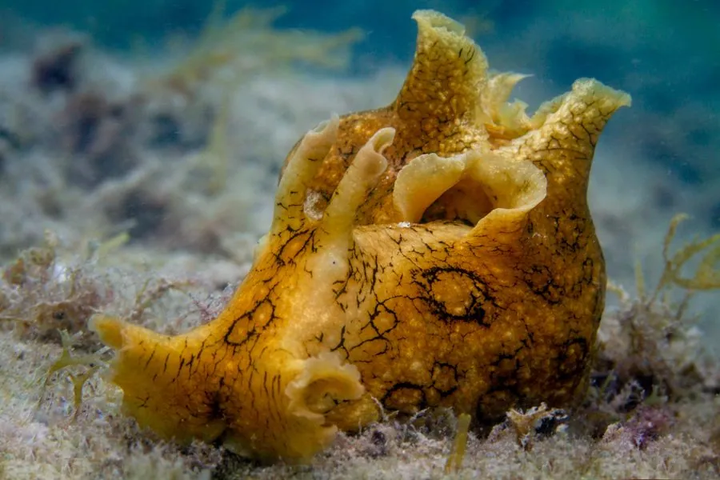

软体动物 · 动物界
黑斑海兔 Aplysia dactylomela

体表布满黑色环斑的大型海兔，受惊时会喷出紫色墨汁掩护逃跑，广泛分布于热带和亚热带的海草床与浅海。
- 分类
- 门软体动物门纲腹足纲目无楯目科海兔科属海兔属
- 栖息环境
- 热带和亚热带浅海的海草床、礁石间和沙泥底，水深通常不足二十米
- 地理分布
- 全球热带和亚热带浅海，包括大西洋、印度洋和太平洋沿岸
- 保护级别
- 尚无保护级别；种群受近岸污染和海草床退化影响
物种志
黑斑海兔的身体柔软，呈长卵形，长约十五至三十厘米，没有外壳，体表光滑或略带小突起，颜色多为黄褐、绿褐至灰绿色，上面布满黑色的环状斑纹和网纹，黑斑海兔之名由此而来。头部有两对触角，像兔子的耳朵，口内有齿舌和颚。它的外套膜下有退化的薄壳，只剩一片透明的角质片。受惊时它会喷出紫色或紫红色的墨汁。
它广泛分布于全球热带和亚热带浅海，包括大西洋、印度洋和太平洋的沿岸，栖息在海草床、礁石间和沙泥底的浅水区，水深通常不足二十米。它以多种海藻为食，靠齿舌刮食，摄食的藻类色素会影响它的体色。它是雌雄同体的动物，繁殖时成群聚集，产下细长的胶质卵带，像一团团面条，卵孵化后幼体随洋流扩散。目前尚无保护级别，种群受近岸污染和海草床退化影响。
形态与习性
- 食性以多种海藻为食，靠齿舌刮食
- 体长约十五至三十厘米，无外壳
- 斑纹体表布满黑色环状斑和网纹
- 防御受惊时喷出紫色或紫红色墨汁
- 繁殖雌雄同体，产下细长胶质卵带
- 栖息深度浅水区，水深通常不足二十米
趣味知识
- 黑斑海兔身上的黑色环纹像一个个小网眼，是它最醒目的标志。
- 它体内只剩一片透明的退化薄壳，藏在柔软的背部皮肤下。
- 海兔喷墨后能借墨汁的烟雾转身逃走，墨汁还会麻痹捕食者的嗅觉。